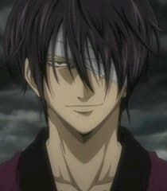

Gintoki est le protagoniste de la saga et son nom sert de base pour le titre de l'oeuvre. Il est présenté comme un samouraï rebelle qui vit dans une version alternative du Japon des années 1860. Il est doublé par Tomokazu Sugita.
Shinpachi Shimura est le copropriétaire du Shimura Dōjō avec sa sœur, Tae Shimura . Il est également l' apprenti samouraï de Gintoki Sakata et travaille pour lui dans son entreprise Odd Jobs . Il est doublé par Daisuke Sakaguchi.
Kagura est une Amanto de la tribu Yato, la race considérée comme la plus puissante de l'Univers. Pendant son enfance, Kagura a vécu dans les bidonvilles de sa planète avec son père, sa mère et son frère aîné. Elle est doublée par Rie Kugimiya.
Kondo Isao est le commandant en chef du Shinsengumi. Il est souvent comparé à un gorille, de cette façon, la plupart des personnages le surnomment Gorilla-San (Monsieur Gorille). Lorsqu'il ne travaillait pas il était occupé à traquer la sœur de Shinpachi. Il est doublé par Chiba Susumu. Hijikata Toushirou est l'un des trois fondateurs du Shinsengumi(avec Kondo Isao et Okita Sougo) Il est présenté comme le cerveau du Shinsengumi et comme un démoniaque vice-commandant infligeant ainsi la crainte à ses ennemis et subordonnés. Il est le créateur du Kyokuchuu Hatto (code des guerriers) et veille sérieusement au respect de ce code. Il est doublé par Nakai Kazuya. Okita Sougo est le capitaine de la 1ère Division du Shinsengumi, il a été stagiaire au dojo de Kondô Isao dans sa jeunesse. Il est doublé par Suzumura Kenichi. Katsura Kotarou (surnommé Zura (qui veut dire perruque) par Gintoki, ce qu'il semble ne pas apprécier du tout) est un ancien compagnon de Gintoki, Sakamoto et Takasugi lorsqu'ils faisaient partie du Jouishishi, la résistance anti-Amanto. Il est doublé par Akira Ishida. Elizabeth est l'allié de Kotarô Katsura, il ressemble à un gros canard blanc. Elle "communique" par des pancartes qui servent aussi pour attaquer. Elle est doublée par Furuya Toru.
Autres

Takasugi Shinsuke est le leader de l'organisation terroriste Kiheitai littéralement "Armée de soldats démons" et le principal antagoniste de la série, à la fois ennemi des Yorozuya, du Shinsengumi et du Jouishishi. Il est doublé par Koyasu Takehito. Hasegawa est un ancien agent spécial des affaires étrangères qui a perdu son emploi après avoir refusé de se faire (suicide par éventration), pour avoir échoué dans sa mission à cause de Gintoki. Il est rapidement devenu ami avec lui malgré ses ennuis. Il est couramment appelé "Madao" signifiant à peu près "chômeur" ou "bon à rien". Il est doublé par Tachiki Fumihiko.